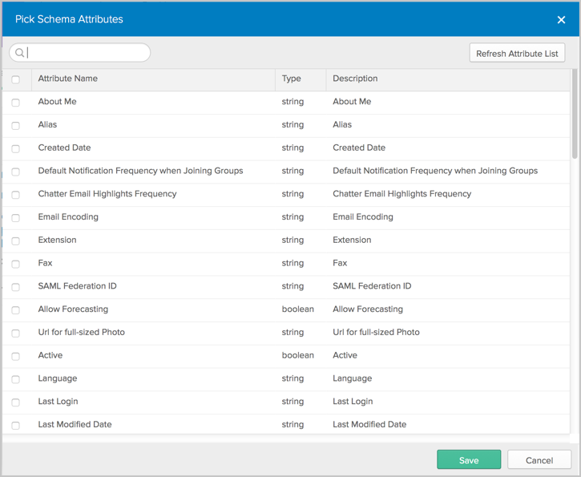
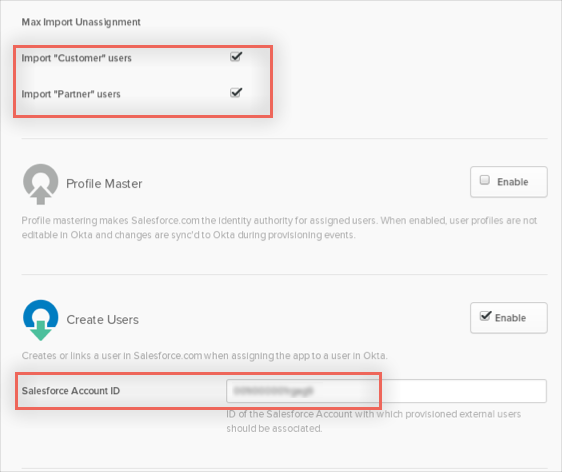
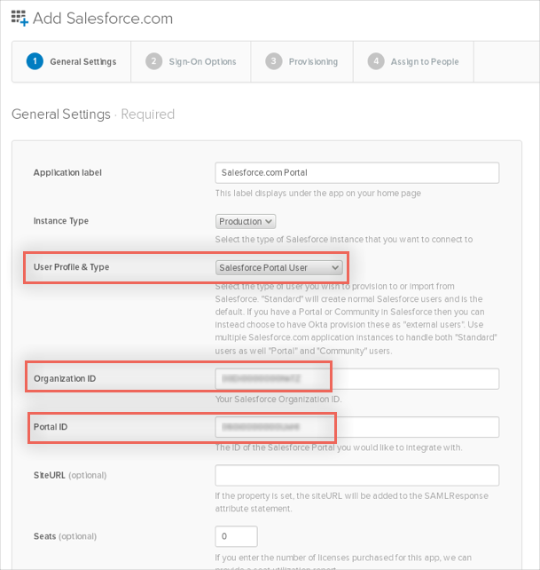
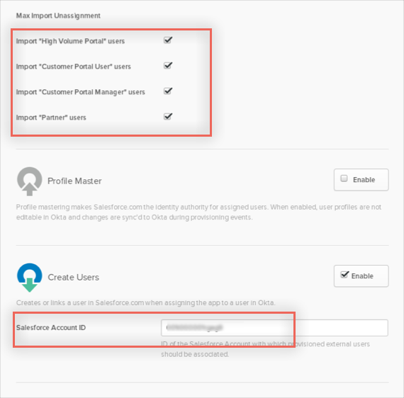

This guide provides the steps required to configure Provisioning for Salesforce and includes the following topics:
Create an administrator account in Salesforce. You will use this account’s username and password to configure the Salesforce app in Okta. When you create an administrator account, Salesforce will provide you with a token.
Note: Every time you reset this account’s password, Salesforce will provide you with a new token, and you need to edit the Salesforce app’s Provisioning settings in Okta using the new password/token as described below. See TIPS below.
You are now ready to configure your Provisioning settings as follows:
In the API Credentials section, enter the Username, Password and Token associated with your Salesforce Administrator account.
Note: Simply append the token Salesforce provided to you to your password, no spaces or other characters.
- To avoid breaking the integration when the password is reset, use a dedicated API account for connecting Okta to Salesforce.
- Do not enable delegated authentication in Salesforce for the API user specified here.
Click Test API Credentials; if successful, a verification message appears at the top of the screen, as shown below:

Scroll down and specify the type of Provisioning Features you want to enable, then click Next.
You can now assign people to the app (if needed) and finish the application setup.
If the existing Salesforce app instance that you have configured does not allow schema discovery, then it is an older version of the integration. You need to add a new Saleforce app instance to obtain the Schema Discovery feature.
To add extra attributes to a User’s Profile, follow the instructions below:
In Okta, from the Admin dashboard, select Directory > Profile Editor.
Select the APPS section in the left navigation pane, then find your app in the list.
Check the list of attributes, and if you decide you need more, click Add Attribute. A list of extended attributes will appear:

Select the attributes you want to add, then click Save.
You can now import and push these user attribute values to/from Salesforce.
Schema discovery does not support all Salesforce custom attribute types. The following is a list of the custom attribute types along with whether they are supported or not.
| Attribute Data Type | Supported |
|---|---|
| Auto Number | No |
| Formula | No |
| Roll-Up Summary | No |
| Hierarchical Relationship | No |
| Checkbox | Yes |
| Currency | No |
| Date | Yes |
| Date/Time | Yes |
| Yes | |
| Geolocation | No |
| Number | Yes |
| Percent | No |
| Phone | Yes |
| Picklist | No |
| Picklist (multi-select) | No |
| Text | Yes |
| Text Area | Yes |
| Text Area (long) | Yes |
| Text Area (rich) | Yes |
| Text (encrypted) | Yes |
| URL | No |
This integration only supports the Salesforce User object. Contacts, Accounts, and Opportunity objects are not supported.
It is not possible for Okta to auto-update all user attributes in Salesforce, while selectively excluding Profile or Role from being updated.
This is an Early Access feature, contact Okta Support to enable it.
When enabled, the PROV_SALESFORCE_COMMUNITY_AND_PORTAL feature flag allows you to create instances of the Salesforce.com app that can integrate with either a Salesforce Customer Portal or a Salesforce Customer Community. Without this EA feature enabled, Okta supports a more limited form of this integration with the Salesforce Customer Portal application. Advantages of the new functionality are full Universal Directory (UD) support for Portal/Community users and SAML SSO for Communities.
Following are the instructions to create the two types of Salesforce integration:
In Okta, From the Add Application screen select Salesforce.com.
On the General Settings tab for the Salesforce app, select Salesforce Community User from the User Profile & Type dropdown. Fill in the other settings as normal.

Configure SAML 2.0.
You can optionally configure SAML 2.0 settings to allow Community users to automatically login to Salesforce. Unlike the existing Salesforce Customer Portal app, a separate SAML configuration is used. Click View Setup Instructions and follow the SAML setup instructions. Set the Login URL to the Community Login URL for your community; you can find this on the Salesforce Single Sign-On Settings page under Endpoints.
Note: SWA login is not currently supported for Communities.
Configure Provisioning:
Note: As part of provisioning each new Community user, Okta creates a new contact in Salesforce associated with the account you specify in the AccountID field. This new contact contains the user's name and email address. This contact is necessary because Community users in Salesforce must be associated with a contact.
On the provisioning options screen there are additional configuration options: the type of Community users to import and the Salesforce Account ID for provisioned users.
Types of Users: Check Import "Customer" users and/or Import "Partner" users.
Salesforce Account ID: If you have enabled Create Users, specify the Salesforce Account ID with which the Community user's contact will be associated with in Salesforce.

Complete the application setup as normal.
In Okta, from the Add Application screen select Salesforce.com.
On the General Settings tab for the Salesforce app, select Salesforce Portal User from the User Profile & Type dropdown. Enter your Salesforce Organization ID, Portal ID, and optionally the Site URL. Fill in the other settings as normal.

Configure SAML 2.0.
You can optionally configure SAML 2.0 settings to allow Portal users to automatically login to Salesforce. Unlike the existing Salesforce Customer Portal app, a separate SAML configuration is used. Click View Setup Instructions and follow the SAML setup instructions. Set the Login URL to the Salesforce Login URL; you can find this on the Salesforce Single Sign-On Settings page under Endpoints.
Configure Provisioning:
Note: As part of provisioning each new Portal user, Okta creates a new contact in Salesforce associated with the account you specify in the AccountID field. This new contact contains the user's name and email address. This contact is necessary because Portal users in Salesforce must be associated with a contact.
On the provisioning options screen there are additional configuration options: the type of Portal users to import and the Salesforce Account ID for provisioned users.
Types of Portal Users: Check the boxes next to the types of users you want to import.
Salesforce Account ID: If you have enabled Create Users, specify the Salesforce Account ID with which the Portal user's contact will be associated with in Salesforce.

Complete the application setup as normal.